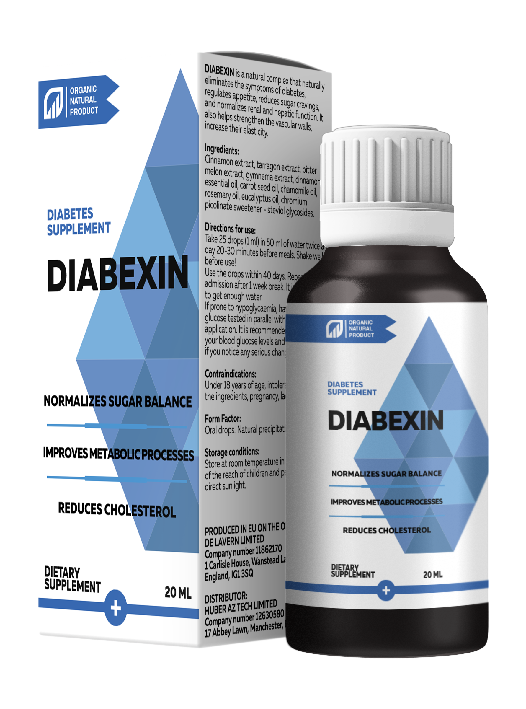

diabet, sănătate, metformină, natural, imunitate
Învățați să deosebiți realitatea de ficțiune - asta vă va ajuta să luptați împotriva diabetului!
Principalele concepții greșite despre diabet care scurtează durata de viață. Rădescu Valentin este membru al Asociației Europene a diabetului.
Până în prezent, el este considerat cel mai bun endocrinolog din toată Europa. Aproape toate celebritățile care suferă de diabet se adresează lui pentru ajutor și tratament. A fost angajat al celui mai mare centru de tratament pentru diabet. A scris 32 de publicații științifice și există de trei ori mai multe publicații în reviste de specialitate.
Rădescu Valentin rareori dă interviuri, dar de data aceasta a fost de acord să vorbească despre una dintre cele mai periculoase boli care revendică anual mii de vieți. Următoarele sunt sfaturi importante pentru a vă ajuta să luptați împotriva diabetului.
RĂDESCU VALENTIN ESTE SIGUR CĂ DIABETUL DE TIP II POATE FI COMBĂTUT CU AJUTORUL UNUI PRODUS MODERN!
Subiecte abordate în acest articol:
- Care este cel mai important lucru în lupta împotriva diabetului?
- De ce 95% dintre pacienții diabetici nu își pot controla nivelul zahărului din sânge?
- Este posibil să trăiești o viață deplină cu diabet?
Medicamente chimice: care sunt riscurile și consecințele consumului lor?
Medicii sunt alarmați că farmaciile înșeală pacienții
Rădescu Valentin:
În cele mai multe cazuri, preparatele farmaceutice pentru diabetici conțin același element chimic: metformin. Dar diabeticii nu sunt întotdeauna avertizați cu privire la daunele pe care le poate provoca organismului. Dacă medicul nu v-a spus despre posibilele consecințe înainte de a recomanda un remediu diabetic de la farmacie - fugiți imediat de el!
Toate aceste medicamente cresc nivelul de insulină din sânge într-o stare critică. Pe măsură ce cantitatea de insulină crește, sângele se îngroașă ca laptele condensat. În cantități mari, insulina provoacă daune ireparabile organismului. Poate deteriora ficatul, rinichii și alte organe vitale. Insulina este similară în consistență și acțiune cu acidul gastric. Imaginați-vă ce s-ar întâmpla dacă acidul stomacal s-ar întâlni cu organele interne. O să le ardă!
Un nivel ridicat de insulină distruge celula într-o asemenea măsură încât poate contribui la diviziunea anormală, provocând astfel cancer. Din acest motiv, statisticile arată că RISCUL DE CANCER LA PACIENȚII DIABETICI ESTE CU 23% MAI MARE!
În plus, conținutul ridicat de insulină duce la faptul că sângele devine mai gros și fluxul sanguin se înrăutățește. Ca urmare, vasele sunt înfundate cu plăci de colesterol, care, la rândul lor, determină o creștere a tensiunii. Hipertensiunea arterială se dezvoltă la 73% dintre pacienții cu diabet zaharat. De asemenea, apar multe alte probleme cardiovasculare.
Lista posibilelor efecte secundare la administrarea de medicamente chimice
- tulburări ale tractului gastro-intestinal (cel mai adesea diaree, arsuri la stomac, eructații, ulcer gastric);
- hipertensiunea arterială – stres crescut, mai ales noaptea, dureri de cap, congestie a urechii, senzație de frică;
- ciroza hepatică – ficatul se transformă în țesut conjunctiv și oprește purificarea sângelui, întregul organism este umplut cu toxine;
- pietre la rinichi datorită producției intensive de sare și zahăr;
- bolile oncologice;
- moarte prematură din cauza distrugerii vasculare;
- orbire.
Dezvoltarea complicațiilor, desigur, depinde de timpul și cantitatea medicamentului utilizat, precum și de caracteristicile individuale ale unei persoane. Cu toate acestea, ESTE IMPOSIBIL SĂ LE EVIȚAȚI COMPLET!
Dacă sunt atât de dăunătoare, atunci de ce sunt folosite?
Din păcate, nu există atât de mulți specialiști în clinicile private de astăzi cărora le pasă cu adevărat de sănătatea pacienților lor. Mai mult, de regulă, nu le pasă. Ei doar își fac treaba și sunt plătiți pentru asta. Nu contează dacă remediul a ajutat sau nu. Deci, fără prea multe ezitări, ei urmează ceea ce spun superiorii lor. Și ceea ce este folosit pentru prescrierea prescripțiilor bazate pe o substanță potențial periculoasă aduce un profit bun din vânzarea sa. Efectul acestor medicamente este, dar temporar.
Nu vor vindeca oamenii de diabet!
Pacientul nu este conștient de consecințele care pot apărea ca urmare a administrării unui anumit medicament dacă nu este informat despre acesta.
Eliminarea simptomelor diabetului cu mijloace chimice agresive poate fi foarte periculoasă! Dar acest lucru poate fi rezolvat cu succes. Trebuie să alegeți o altă soluție la problemă!
Rădescu Valentin:
Sunt adesea abordat de oameni care iau medicamente agresive chimic de câțiva ani. Aceștia sunt bolnavi care au îmbătrânit mai devreme decât ar trebui...
Tendințe în creșterea diabetului în lume.
Acest lucru este valabil mai ales pentru persoanele cu diabet zaharat de tip II. De obicei, se simt bine și nici măcar nu bănuiesc că glicemia lor este ridicată. Și apoi li se administrează substanțe chimice cu o doză tot mai mare...
Ca urmare, nivelul zahărului scade, dar în timp, starea de sănătate începe treptat să se deterioreze. Un diabetic începe să se plângă de oboseală cronică, obezitate, hipertensiune arterială, dureri de cap. Picioarele încep să se umfle, iar dimineața fața. Ei simt un sunet constant în urechi. Degetele sunt amorțite, membrele se răcesc. Vederea devine neclară. Memoria se deteriorează.
Experții spun că totul se datorează diabetului. Dar foarte des se întâmplă din cauza insulinei. Sau, mai precis, acele produse care conțin, de exemplu, metformină, care crește producția de hormoni la un nivel anormal.
CU TOATE ACESTEA, NU CREDEȚI CĂ NU TREBUIE SĂ LUAȚI MĂSURI PENTRU A VĂ CONTROLA DIABETUL. Dacă trebuie să alegeți între substanțele chimice agresive și o respingere completă a tratamentului, ar trebui să alegeți cu siguranță primul. Diabetul de tip 2 te va ucide mai devreme dacă îl ignori. Același lucru este valabil și pentru alte boli.
Există probleme cu vasele de sânge și cu activitatea organelor interne!
Imaginați-vă o bomboană de cireșe sau zmeură. Același lucru este valabil pentru toate vasele de sânge dacă aveți diabet. Pereții vaselor sunt impregnați cu zahăr și devin fragili. Ca urmare, vasele de sânge își pierd capacitatea de a se contracta și de a se extinde. Vasele de sânge de cea mai mică dimensiune mor mai întâi, urmate imediat de vase de dimensiuni medii și mari. Vasele de sânge care alimentează organele interne. Încălcarea alimentării cu sânge duce la dezvoltarea bolilor cronice.
Cum ucide diabetul din interior:
Pierderea vederii. Diabetul face o persoană oarbă. Pentru totdeauna. Este imposibil să restabiliți vederea unei persoane afectate de diabet zaharat, chiar și cu ajutorul corecției cu laser, deoarece detașarea retinei apare ca urmare a sângerărilor extinse.
Rinichii cedează. Zahărul nu înfundă doar ureterele. Mediul din rinichi devine foarte dulce. Zahărul este un conservant. Aveți grijă de rinichi. Ei mor puțin câte puțin. Insuficiența renală cronică este doar vârful aisbergului. Rinichii pot ceda complet.
Articulațiile pierd mobilitatea. Mișcarea articulației este asigurată de lichidul sinovial. Când vasele de sânge nu mai alimentează articulațiile, lichidul sinovial nu mai este eliberat. Articulațiile se usucă. Ca urmare, o persoană trebuie să suporte dureri inimaginabile. Nici măcar calmantele nu ajută. Articulațiile se usucă complet și se distrug. O persoană devine invalidă.
Sistemul nervos este distrus. Sistemul nervos, ca multe alte organe, suferă de un exces de zahăr. Din când în când, pacienții cu diabet zaharat au tulburări nervoase, deoarece sunt dezechilibrați emoțional. Adesea se deprimă, nimic nu le place. Se ajunge la punctul în care singurul lucru la care visează este doar să moară în somn, rapid și fără durere.
Pielea putrezește! Mai întâi se usucă, apar crăpături, apoi eczeme și furuncule. Mușchii și oasele încep să se descompună și să se separe de piele. Apare mirosul de carne putredă. Toate acestea duc la gangrena.
Indiferent de modul în care îl priviți, diabetul este o boală foarte gravă, una dintre cele mai periculoase. Îmi pare foarte rău pentru cei care au fost diagnosticați cu diabet. Încerc să-i ajut, dar totul depinde, în primul rând, de pacienții înșiși.
Dacă produsele chimice agresive sunt dăunătoare sănătății, atunci ce ar trebui să facă un diabetic? De exemplu, cel mai obișnuit pensionar, care a fost diagnosticat cu această boală cu vârsta. Zahărul din sângele său este în continuă creștere. Ce trebuie făcut pentru a depăși boala sau cel puțin pentru a opri dezvoltarea acesteia și pentru a vă proteja organismul de consecințele teribile?
Rădescu Valentin:
Repet: diabetul zaharat de tip 2 este o boală complexă, periculoasă și sistemică. Aceasta nu este o răceală obișnuită sau diaree. Acest lucru este mult mai grav. Boala afectează întregul organism, deci tratamentul ar trebui să fie, de asemenea, sistemic. Este ineficient și periculos doar creșterea nivelului de insulină și astfel `tratarea` acestei probleme...
În diabet, o abordare integrată este importantă. Este necesar nu numai reducerea nivelului de zahăr, ci și eliminarea riscurilor de complicații din toate organele și sistemele.
Dacă vorbim despre produse eficiente în lupta împotriva diabetului, aș recomanda un remediu numit . Este dezvoltat în un an într-un laborator privat finanțat de Fundația pentru diabet. Nu conține ingrediente chimice agresive, este îmbogățit cu complexe de ANTI-DIABETIC NATURE și COMPONENTE ACTIVE CARE AJUTĂ ORGANISMUL CU DIABETUL ZAHARAT.
Acest produs conține toate vitaminele, macro-și microelementele care sunt vitale pentru persoanele cu diabet zaharat. Extracte din plante de scorțișoară, tarhon, pepene amar și jimnema în formula ajută în mod natural organismul să controleze nivelul zahărului din sânge.
- un produs complet natural, ceea ce înseamnă că este cât mai sigur posibil pentru organism. S-a dovedit că are un efect pozitiv asupra stării întregului organism la pacienții cu diabet zaharat.
Eficienţa neobișnuit de mare, motiv pentru care produsul nu are analogi în întreaga lume. De îndată ce toți medicii încep să recomande acest produs pacienților lor, 96 din 100 de persoane își vor lua rămas bun de la simptomele diabetului odată pentru totdeauna! Nu vor mai avea niveluri ridicate de zahăr din sânge și se vor simți minunat.
O scrisoare cinstită despre lupta împotriva diabetului
Aș dori să vă arăt o scrisoare Visan Nicolae - un pensionar de 77 de ani cu diagnostic de diabet. Nu am comunicat personal cu el (nu a putut veni la noi din cauza sănătății precare). I-am spus despre la telefon. Drept urmare, starea lui s-a îmbunătățit.
Iată ce a scris.
De ce alți specialiști ascund de oameni produse uimitoare precum ? Am suferit de diabet sever. Timp de 18 ani mi-a fost ca un prieten. De când aveam 49 de ani. Recent, acest lucru a provocat complicații grave cu vederea și rinichii. Rinichii mei abia funcționează, miros a acetonă. Fiica mea nu putea fi în aceeași cameră cu mine. În plus față de furuncurile permanente pe picioare, picioarele și vârfurile degetelor au devenit negre. M-am simțit aproape ca un cadavru. Medicii mi-au confirmat că nu mai am mult timp.
I-am spus fiicei mele că este timpul să ne pregătim pentru înmormântarea mea. Am trăit o viață lungă și fericită, dar tot nu am vrut să mor. Chiar și atunci când strigam despre asta într-o criză de isterie. De fapt, mi-a fost frică să mor. a devenit ultima mea speranță. Am auzit că acest remediu este capabil să atenueze starea diabeticilor ca mine, dar din anumite motive nu mi-a venit să cred până la capăt. Și întregul meu anturaj m-a legat să-mi accept soarta, deoarece este puțin probabil ca ceva să mă mai poată ajuta. Am văzut surâsuri pe unele fețe -m-au convins că îmi pierd timpul cu medicamente inutile. Așa că nu m-am dus la clinica dvs. Dar într-o zi v-am văzut la televizor și am decis să vă contactez.
Vă mulțumesc foarte mult pentru consultare și pentru că mi-ați expadiat Am început să-l iau imediat. Au trecut patru luni de atunci și sunt încă în viață. Experții spun că nu ar trebui să planific moartea în viitorul apropiat, pentru că am zahăr normal din sânge. Și o simt și eu! În ultimii 10 ani, nu m-am simțit la fel de sănătos și lipsit de diabet ca acum! Am început să dorm liniștit, setea mea neîncetată a dispărut, nu mai alerg la toaletă la fiecare 10 minute, am mult mai multă putere și energie! De asemenea, tensiunea a revenit la normal. Și vederea mea s-a îmbunătățit. Am terminat un curs de două luni de tratament cu și sunt sigur că am câștigat bătălia cu diabetul. Sunt sănătos! Mulțumesc!
Spune-ne, cât de repede putem învinge diabetul cu ajutorul lui
Să fiu sincer, acesta nu este un proces rapid - întregul organism `repornește`. În medie, cursul de tratament durează 1,5-2 luni. Pentru unii, durează 2,5 luni, uneori mai mult. Totul este individual aici, dar principalul lucru este un rezultat excelent pe care îl primesc absolut toți pacienții!
Trebuie să fiți pregătiți pentru o luptă lungă. Dar după un curs de administrare veți putea duce un stil de viață activ sănătos, la fel ca înainte de diabet.
Acest produs unic ajută toți oamenii, inclusiv cei cu un sistem imunitar slăbit.
Vă îndemn - asigurați-vă că ați finalizat complet cursul, deoarece produsul are un efect cumulativ și recuperarea are loc treptat. Vă voi spune pas cu pas cum are loc procesul de vindecare al organismului.
Vasele de sânge sunt restaurate
Efectul aceasta constă în faptul că nu numai că elimină zahărul din sânge, ci și normalizează nivelul de glucoză. De asemenea, dizolvă zahărul care a pătruns prin pereții vaselor de sânge, datorită unuia dintre ingredientele sale – extractul de jimnema. Acest lucru este similar cu modul în care pereții vaselor de sânge se dezgheță și capacitatea lor de a contracta și extinde randamentele. Cheagurile de sânge se dizolvă, canalele sunt eliminate. Capilarele mici sunt restaurate. Ca urmare, tensiunea încetează să crească, slăbiciunea și somnolența dispar, iar rănile se vindecă mai repede. În plus, oamenii încep să obțină mult mai multă energie.
Normalizează nivelul de glucoză
nu provoacă o creștere a nivelului de insulină, deci nu este periculos. Dar, în plus, ajută la reducerea rezistenței la insulină. Componentele biologic active ale produsului pătrund direct în celulele musculare, grase și hepatice și le stimulează atât de mult încât încep să răspundă mai bine la prezența hormonului în sânge. În medicină, acest proces se numește` formarea celulelor secundare`, ca urmare a faptului că celulele încep să consume glucoză mai activ, ceea ce determină o scădere a concentrației sale în sânge.
Diabeticii încep să se simtă bine în orice moment al zilei, chiar și după ce au mâncat. Nu le mai este sete. Nu mai există umflături, ulcere și mâncărimi la nivelul organelor genitale. Călătoriile constante până la toaletă se opresc.
Conform indicatorilor fizici: nivelul hemoglobinei glicate scade, precum și concentrația de zahăr și acetonă în urină.
Excesul de grăsime dispare!
Excesul de greutate agravează starea pacienților cu diabet zaharat de 4-5 ori. De aceea este important că de asemenea, are un efect asupra pierderii în greutate în organism. Celulele încep să transforme în mod activ zahărul în energie.
Pierderea de 10 kg reduce riscul de complicații ale diabetului cu 50%.
Restabilirea libidoului și a potenței
Mulți diabetici suferă de disfuncție erectilă. Unul dintre efectele incredibile este că contribuie la normalizarea nivelului de testosteron și la restabilirea potenței sănătoase. Chiar și la vârsta de 50, 60 de ani, bărbații pot face sex din nou.
Îmbunătățirea pielii, oaselor și mușchilor
Chiar și pielea grav afectată este restabilită. Ulcerele se vindecă, pielea încetează să mai fie uscată. Același lucru se întâmplă și cu oasele - se regenerează și se opresc din rupere. Vindecarea are loc în toate țesuturile, mușchii devin elastici.
Acțiunea similar cu acțiunea unor aripi de fluture, deoarece produsul provoacă o reacție în lanț de vindecare a organelor interne și de îmbunătățire a stării acestora. Începând cu normalizarea funcției vasculare până la restabilirea vederii și a articulațiilor.
Trezire ușoară
Este ușor să te trezești dimineața și să te ridici din pat. Nu mai trebuie să vă deplasați pentru a vă ridica, a vă întinde și a vă masa picioarele, spatele și gâtul rigid. Corpul tău este plin de energie și putere.
Un somn de noapte liniștit
Somnul devine mai calm și oferă mai multă energie dimineața. Nu este nevoie să alergi constant la toaletă noaptea, mirosul neplăcut de urină dispare.
Mic dejun delicios
Puteți completa meniul cu diverse produse, deoarece nu mai trebuie să urmați o dietă strictă. Puteți mânca ceea ce v-ați dorit întotdeauna. Gata cu dietele cu conținut scăzut de carbohidrați. Bucurați-vă de gustul mâncărurilor preferate!
Picioarele nu dor și nu obosesc
Când părăsiți casa, nu mai trebuie să vă faceți griji cu privire la picioare: mersul pe jos nu este o activitate neplăcută pentru dvs., puteți merge toată ziua și picioarele nu se vor obosi și nu se vor umfla. Sandalele, pantofii și șosetele nu vor mai lăsa urme pe picioarele umflate, ca un fir pe un cârnați.
Starea de spirit se îmbunătățește
Vine calmul și relaxarea. Nu mai există durere constantă chinuitoare care tulbură la nesfârșit conștiința și nu vă permite să vă concentrați asupra altceva. Când nimic nu doare, lucrurile obișnuite devin mai plăcute - cântarea păsărilor, suflarea vântului, căldura soarelui...
Vederea este restabilită
Treptat, ochii încep să vadă mai bine. Ceea ce a fost văzut anterior ca într-o ceață devine clar. Puteți vedea cu ușurință numărul autobuzului de departe și vă puteți bucura din nou de frumusețea naturii.
Și, cel mai important - prelungește viața diabeticilor! Se vor simți sănătoși și veseli chiar și la bătrânețe. Cei dragi nu vor trebui să îngrijească de tine, pentru că vei putea avea grijă de tine de sinestătător.
nu se vinde în farmaciile române!
Din câte știm, este imposibil să cumpărăm într-o farmacie. Și ce ați recomanda tuturor Diabeticilor din România?
Așa este. se vinde în loturi limitate și, prin urmare, nu ajunge la farmacii. Din păcate, majoritatea pleacă în străinătate și sunt achiziționate de clinici private.
Dar am o veste bună: am vorbit cu colegii mei și am decis să alocăm o parte din lotul pentru cititorii dvs. cu o reducere de 50%. Șă comandați picăturile conform promoției, puteți prin formularul oficial de comandă de pe acest site de mai jos . Reducerea este valabilă pentru toți rezidenții României!
Condiții pentru obținerea cu o reducere de 50% %:
- Trebuie să locuiți în România. Nu expediem în afară.
- Achiziționați produsul pentru uz personal. Comandați un produs pentru dvs., familia sau prietenii dvs. Nu lucrăm cu intermediari care doresc să cumpere întregul lot pentru revânzare la un preț mai mare.
- Completați un formular special de comandă cu numele și numărul dvs. de telefon pe acest site. Aceasta este o garanție a obținerii unui produs original și eficient la cel mai bun preț.
Profitați de această oportunitate înaintea altora!
Din păcate, nu este suficient pentru toți diabeticii din România. Vom putea trimite acest produs unic celor care sunt mai rapizi decât alții pentru a trimite o cerere.
Dacă doriți, de asemenea, să scăpați de diabet cu acest remediu modern, eficient și sigur, vă sfătuiesc să îl comandați cât mai curând posibil, în timp ce este încă disponibil.
Atenție!
La disponibil la reducere: 20 buc.
Atenție!
Vizitatorii site-ului nostru au o oportunitate exclusivă de a comanda de la un producător
oficial cu o reducere de 50%. Pentru a face acest lucru, completați formularul special de comandă de
mai jos și faceți clic pe `COMANDĂ `.
Un specialist vă va contacta pentru a răspunde la toate întrebările și pentru a conveni asupra unui
moment convenabil și a unui loc de livrare a produsului. Plata la primire!
DISCUŢIE